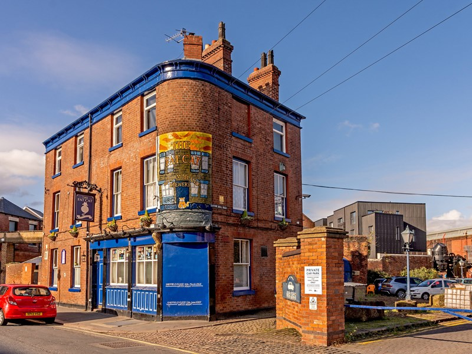
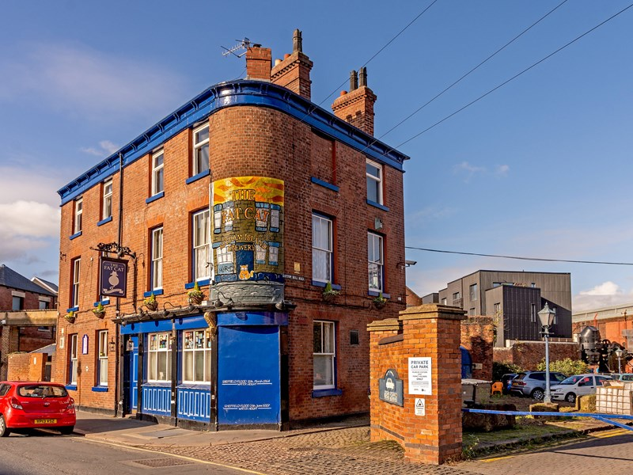

🐈The Fat Cat🐈
Victorian pub with wood panel bar and walled garden, acclaimed for its real ales brewed on site.
Address: 23 Alma St, Sheffield S3 8SA
Victorian pub with wood panel bar and walled garden, acclaimed for its real ales brewed on site.
Address: 23 Alma St, Sheffield S3 8SA